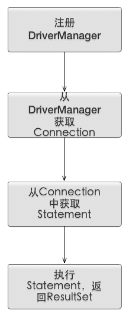

Java DB load balance 设计
Table of Contents
1 JDBC
简单介绍下JDBC的定义，如下（摘自百度百科）：
JDBC（Java Data Base Connectivity,java数据库连接）是一种用于执行SQL语句的Java API，可以为多种关系数据库提供统一访问，它由一组用Java语言编写的类和接口组成。JDBC提供了一种基准，据此可以构建更高级的工具和接口，使数据库开发人员能够编写数据库应用程序，同时，JDBC也是个商标名。1 平时我们在实际开发中一般都是直接使用连接池来做DB相关操作的，很少会直接使用JDBC进行编程。但是连接池底层连接DB的时候也是使用的JDBC，比如c3p0。2
下面通过代码介绍下通过JDBC操作DB的过程。如下所示：
//1. 注册DriverManager,DriverManager中的静态List registeredDrivers 保存了所有的Driver引用 Class.forName("com.mysql.jdbc.Driver"); //2.拼接连接信息，协议/子协议/数据源标识，连接信息 String url = "jdbc:mysql://localhost:3306/csc?user=root&password=xxxx"; //3. DriverManager 负责从注册的驱动中挑选合适的连接 Connection connection = DriverManager.getConnection(url); //4. 建立陈述式语句 (Statement,PrepareStatement(安全性[防止sql注入]和性能),CallableStatement（存储过程）) //4.1 Statement Statement statement = connection.createStatement(); //execute query ResultSet resultSet = statement.executeQuery("SELECT * FROM test ORDER by ID limit 10"); //4.2 PrepareStatement，在一个提交中设置了多个陈述式语句。 connection.setAutoCommit(false); PreparedStatement preparedStatementInsert = connection.prepareStatement("INSERT into test(name,sex) VALUES (?,?)"); preparedStatementInsert.setString(1, "csophys"); preparedStatementInsert.setInt(2, 0); preparedStatementInsert.execute(); Statement getLastIdStatement = connection.createStatement(); ResultSet set = getLastIdStatement.executeQuery("SELECT LAST_INSERT_ID()"); connection.commit(); //4.3 statement 的batch的功能以及CallableStatement平时用的不多 //5. 处理返回结果ResultSet while (resultSet.next()) { System.out.println(resultSet.getString(2)); System.out.println(resultSet.getString("id")); } while(set.next()){ System.out.println(set.getString(1)); System.out.println(set.getString("LAST_INSERT_ID()")); }
通过上面的代码，比较清楚的能够看到通过JDBC进行DB操作的几个步骤。如下图所示：

其中 建立陈述式语句 Statement时可以有三类，,Statement，PrepareStatement,CallableStatement。CallableStatement一般用于存储过程， 而Statement和PrepareStatement一般用PrepareStatement比较多，PrepareStatement 可以预编译SQL预计，然后通过sql参数传递执行sql语句， 而Statement执行的时候是完整的执行一个sql，不会预编译，所以需要多次执行一个sql的时候。PrepareStatement比Statement的效果要好，而且PrepareStatement还可以预防SQL注入。3
2 DATASOURCE
Datasource 的功能和DriverManager 比较类似，都是向外输出Connection，只是DataSource一般不直接和DB交互，而是会从连接池中获取DB连接
不要混淆DataSource，DriverManager还有连接池的概念。我的理解是，DriverManager封装了各个DB厂商数据库驱动的差异，能直接和DB操作并且向
外提供数据库连接。而连接池保存了多个DB连接，减少新建DB连接所需要的时间开销。Datasource是更高层次的封装，向外提供Connection，底层一般会
使用连接池技术。
比如采用Spring和Mybatis进行集成开发的时候，会需要配置一个DataSource。一般从采用比较有名的c3p0等。如下：
<!--c3p0数据源--> <bean id="dataSource" class="com.mchange.v2.c3p0.ComboPooledDataSource" destroy-method="close"> <property name="driverClass" value="com.mysql.jdbc.Driver" /> <property name="jdbcUrl" value="jdbc:mysql://localhost:3306/csc" /> <property name="user" value="root" /> <property name="password" value="xxxx" /> </bean>
为了强化记忆，我们可以自己来实现一个简单的DataSource，来给Mybatis使用。如下：
<!--MyDatasource--> <bean id="myDataSource" class="base.jdbc.MyDataSource"> <property name="driverClass" value="com.mysql.jdbc.Driver" /> <property name="jdbcUrl" value="jdbc:mysql://localhost:3306/csc" /> <property name="user" value="root" /> <property name="password" value="xxxx" /> </bean>
MyDataSource中来接收DB的连接信息，并且直接通过DriverManager来获取DB连接。MyDataSource只要集成javax.sql.DataSource，
并且实现里面的getConnection方法就可以了。如下所示：
public class MyDataSource implements DataSource { private String driverClass; private String jdbcUrl; private String user; private String password; public Connection getConnection() throws SQLException { try { Class.forName(driverClass); } catch (ClassNotFoundException e) { e.printStackTrace(); } return DriverManager.getConnection(jdbcUrl+"?user="+user+"&password="+password); } ....
然后用自己的DataSource替换c3p0后用单元测试可以正常工作。